Spectrum Analyzer
The Spectrum Analyzer instrument measures the magnitude of an input signal versus its frequency.
The Spectrum Analyzer uses the oscilloscope channels to acquire input signals. Because of this, all instruments that use the oscilloscope channels will cease acquisition when the Spectrum Analyzer begins sampling.
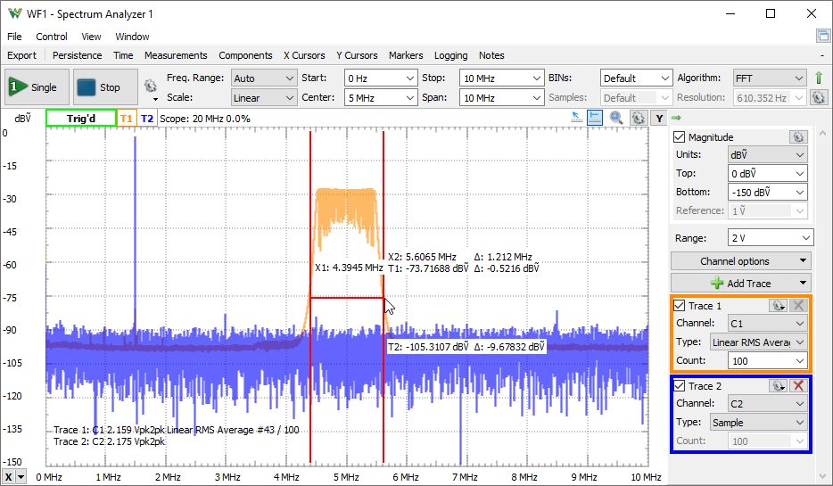
1. Menu
See Menu in Common Interfaces.
1.1. View
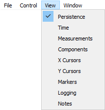
2. Control
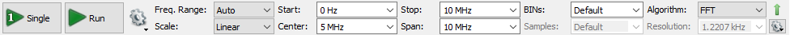
The control toolbar only shows the important options by default. The down/up arrow in the top-right corner shows/hides the other features. This toolbar contains the following:
- Single button: starts a single acquisition.
- Run/Stop button: starts repeated acquisition. While the acquisition is in progress, the Run button becomes the Stop button.

- Run: selects the Run operation for repeated captures to be Continuous, Stop after specified Limit number of captures.
- Device Buffering available with ADP3X50. When checked, in Repeated mode the device will store multiple captures at low latency. The number of device buffers is shown in the top of the main time view, DevBuf: used/total. The maximum device buffers is Scope capture memory/ specified Time-Samples/ Enabled device channels.
In this mode the latency between captures with ADP3X50 is less than 1us, between 0.2 and 0.54 us
- Freq. Range: The frequency range options selects the operation range of the Spectrum Analyzer. Having the auto option selected, the maximum frequency or sampling rate is determined based on the stop or highest value between start and stop.
- Scale: Selects between Linear and Logarithmic frequency scale.
- Center/Span or Start/Stop: The frequency halfway between the stop and start frequencies is known as the Center frequency. This is the frequency that is in the middle of the display’s frequency axis. The Span parameter specifies the range between the start and stop frequencies. Alternatively, the Start and Stop frequencies can be specified.
- BINs: Adjusts the number of frequency bins.
- Samples: Adjusts the number of time domain and oscilloscope acquisition samples.
- Resolution: Adjusts the frequency resolution bandwidth.
- Algorithm:
- FFT: Fast Fourier Transform (quick process) expects a number of input samples (always a power of 2). It then outputs half of this number in frequency BINs, linear from 0 to half of the sampling frequency.
- CZT: Bluestein's Chirp-Z Transform expects an arbitrary number of input samples. It then outputs arbitrary number of frequency BINs, linear from the specified start to stop frequencies. This allows resolution to increase by interpolation. It allows smooth adjustment of resolution bandwidth with a flexible number of input samples and output BINs.
The gear drop-down contains the following options:
- Update: This specifies the time period at which the application will check the oscilloscope device status and read the acquired data. Increase the time to reduce the update rate.
3. Traces
3.1. Magnitude
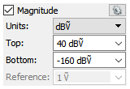
- Units: Selects the amplitude units:
- Peak (V): Relative to 1V amplitude sine wave.
- RMS (Ṽ): Relative to 1Ṽ (1.41V sqrt(2) amplitude) sine wave.
- Ṽ/√Hz (VHz): is RMS value / square root (RBW). Resolution BandWidth = resolution x equivalent noise bandwidth of the window function.
- Peak (dB): dB reference to peak value.
- RMS (dB): dB reference to RMS value.
- dBṼ: dB reference to 1Ṽ sine wave, 20*Log10(Ṽ).
- dBu: dB reference to 0.775Ṽ sqrt(1.2) sine wave, 20*Log10(Ṽ/0.775).
- dBm: dB reference to 0.224Ṽ sqrt(0.1) sine wave, relative to 1mW on 50Ω load.
- dBm/√Hz: dBm - 10*Log10(RBW/1Hz).
- dBm/√MHz: dBm - 10*Log10(RBW/1MHz).
- dBOV: dB reference to full scale square wave, 20*Log10Ṽ/VFSSquare).
- dBFS: dB reference to full scale sine wave, 20*Log10(Ṽ/VFSSine).
- Top: Adjusts the top amplitude level. The channel's input range with Auto option is configured according to this setting.
- Bottom: Adjusts the bottom amplitude level.
- Reference: Adjusts the peak voltage reference for dB unit selection.
The gear drop-down contains the following options:
- Scale: Selects between Linear and Logarithmic magnitude scale, available for voltage units.
- Phase: Selects between Off, Degree or Radian. The phase is displayed at cursor values and in export.
3.2. Channel
The options in the drop-down menu allow configuration of each oscilloscope channel as follows: Offset, Range, Attenuation, Sample Mode, Coupling, Bandwidth, and Impedance; and to configure trigger. Having the Main option for Range, the range will be the Range value set above the Channel options.
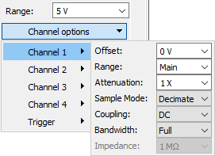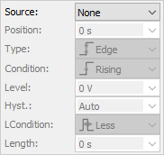
3.3. Trace
The Add Trace drop-down menu contains:
- Add Normal Trace: This adds a trance with default or its last settings.
- Reference: This allows cloning an existing trace settings and data with Hold option, to be used as reference trace.
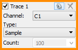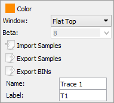
Up to eight traces can be added. For each trace, the following options can be individually configured:
- Channel: The channel option selects the input of the trace, one of the oscilloscope inputs of the connected device, or Hold keeps the trace unchanged/unaffected by the new sweeps.
- Type: Selects one of the following:
- Sample: The trace is updated after each sweep.
- Peak Hold Cont.: Continuous peak hold, keeps the maximum values for each bin from consecutive sweeps.
- Peak Hold: The trace is updated with peak values after the specified count of sweeps.
- Min Hold Cont.: Continuously keeps the minimum amplitude values for each bin from consecutive sweeps.
- Min Hold: The trace is updated with minimum values after the specified count of sweeps.
- Linear RMS Average: The trace is updated after the specified count of sweeps with linear average of Vrms amplitudes.
- Linear dB Average: The trace is updated after the specified count of sweeps with linear average of dB amplitudes.
- Exp. RMS Average: Performs exponential averaging of Vrms amplitudes. It is calculated using the following formula:
Averagei = Rrms(Sweep)/Weight + Rms (Average)(i-1)*(Weight -1)/Weight
- Exp. dB Average: Performs exponential averaging of Vrms amplitudes. It is calculated using the following formula:
Averagei = dB(Sweep)/Weight + dB (Average)(i-1)*(Weight -1)/Weight
- Count/Weight: Specifies the count or weight for the selected averaging methods.
The options drop-down contains the following settings:
- Color: sets the channel waveform color.
- Window: Selects the window function:
- Rectangular: Good for closely spaced sine waves and white noise analysis.
- Triangular: WX = (2/(N+1) *((N+1)/2 - abs(X - (N-1)/2))
- Hamming: WX = 0.54 - 0.46*cos(2*π*X/(N-1))
Good for closely spaced sine waves.
- Hann(ing): WX = 0.5 - 0.5*cos(2*π*X/(N-1))
Good for unknown content, narrowband, and combination of sine waves.
- Cosine: WX = sin(π*X/(N-1))
- Blackman-Harris: WX = 0.35875-0.48829*cos(2* π*X/(N-1))+0.14128*cos(4*π*X/(N-1))-0.01168*cos(6*π*X/(N-1))
- Flat Top: WX = 1 - 1.93*cos(2*π*X/(N-1)) + 1.29*cos(4*π*X/(N-1)) - 0.388*cos(6*π*X/(N-1)) + 0.028*cos(8*π*X/(N-1))
Reduces resolution but is good in amplitude accuracy.
- Kaiser: WX = bessel_i0(beta * sqrt(1 - ((2*X - (N-1)) / n(N-1)m))^2)
- Blackman: WX = 0.42 - 0.5*cos(2*π*X/(N-1)) + 0.08*cos(4*π*X/(N-1))
- Flat TopM: WX = 1 - 1.93*cos(2*π*X/(N-1)) + 1.29*cos(4*π*X/(N-1)) - 0.388*cos(6*π*X/(N-1)) + 0.0322*cos(8*π*X/(N-1))
See Window Functions for more information.
- Beta: Adjusts the π*α parameter of Kaiser window.
- Import Samples: Opens import dialog for time domain data samples.
- Export Samples: Opens export dialog of the trace channel time domain samples.
- Export BINs: Opens export window with the respective trace data. See Export in Common Interfaces.
- Name: specifies the channel name.
- Label: specifies the channel label.
4. Plot
The main spectrum plot shows the magnitude versus frequency. For more on frequency settings, see the Control toolbar and Magnitude options.
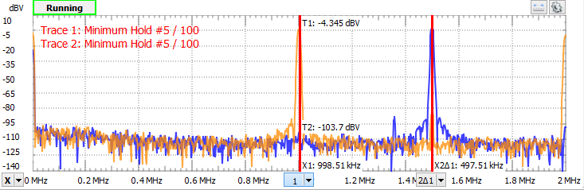
See Plots in Common Interfaces.
4.1 Quick Measure
See Quick Measure in Common Interfaces.
The Quick Measure can be used in the following two modes:
- Free: Allows measuring the distance between two mouse clicks, expressed in frequency and difference. Also shows the vertical value and difference.
- Vertical: The vertical measurement is performed on signal values for each channel.
Having the mouse cursor in the upper half of the plot, the Quick Measure will search and position at a nearby peak. In the lower half of the plot, it is not searching for peaks.
4.2. Cursors
See Cursors in Common interfaces.
5. Views
5.1. Persistence
Persistence view superimposes multiple waveform acquisitions on the same view. The more frequent waveforms are drawn with hotter colors than rare ones. The view is cleared by the clear button, after making any configuration change, or restarting repeated acquisition.
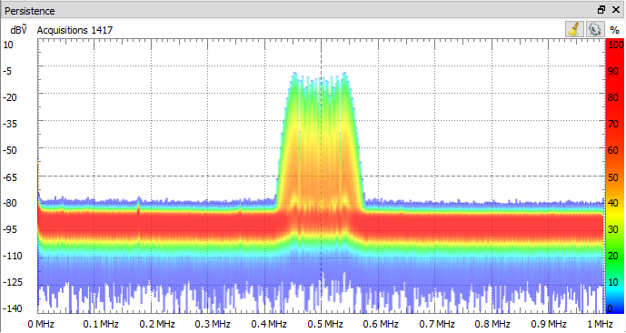
5.2. Time
The time plot shows the last oscilloscope acquisition. This view is used to help adjust optimal offset and range for each channel.

5.3. Measurements
The Measurements view shows the list of the selected measurements. The first column in the list shows the channel, the second shows the name, the third shows the measurement value, the fourth displays the frequency, and the fifth shows the alias frequency for components, along with some other measurements. At the top are Add, Remove, and Option drop-down buttons.
Pressing the Add button opens the Add Measurements window. On the left side is the channel list, and on the right side is a tree view containing the measurement types in groups. Pressing the Add button here (or double-clicking an item) will add it to the measurement list.
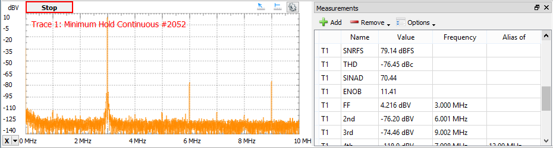
The measurement options:
- Harmonics: Maximum number of harmonics to search for.
- Alias: Search for high frequency harmonics above analysis frequency limit, reflected by sampling frequency.
- Excursion: The minimum excursion level needed for a peak to be considered a valid fundamental frequency or harmonic.
Constant
- ENBW: Normalized equivalent noise bandwidth of window function.
- Resolution: Resolution of bins, bin to bin distance.
- RBW: Resolution bandwidth is calculated from the transform resolution and window bandwidth.
- FS: Full scale is the input range, maximum magnitude of sine wave before clipping.
- DNR: Dynamic range is the ratio, in dB, of the largest to the smallest signals that can be detected.
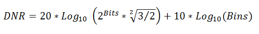
- Bits: AD Converter bits.
- BINs: Number of frequency bins, selectable from the frequency toolbar.
- Samples: Number of time domain acquisition samples, selectable from the frequency toolbar.
Dynamic
- NF: Noise floor is a root mean square (RMS) of all the bins except: the DC, fundamental frequency, its harmonics and slopes of these.
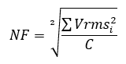
- TN: Total noise is a root sum squared of all the bins except: the DC, fundamental frequency, its harmonics and slopes of these
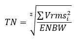
- WoSpur: Worst spur level may or may not be a harmonic of the original signal; DC and bins on the descending slope are excluded.
- SFDR: Spurious free dynamic range is the ratio of the RMS value of the peak signal to the RMS value of the worst spurious signal. Expressed in dBc units, with respect to the actual signal amplitude.
- SFDRFS: Spurious free dynamic range, expressed in dBFS units, with respect to full-scale.
- SNR: SNRp: Signal to noise ratio:
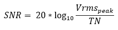 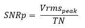
Where Vmrsi are all bins except peak signal, its harmonics, and DC. The exceptions are the descending slope bins of the earlier mentioned peaks.
- SNRFS: Signal to noise ratio, expressed in dBFS units, with respect to full-scale.
- THD: Total Harmonic Distortion, S/D
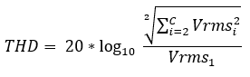
Where Vmrsi are the harmonic peak values.
- SINAD: Signal to noise and distortion, S/(N + D).
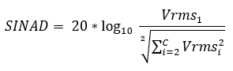
Where Vmrsi are all BINs except peak signal and DC, also excluding bins in the descending slopes of these.
- ENOB: Effective number of bits.
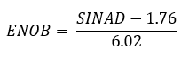
Harmonics
- FF: Fundamental frequency and magnitude.
- Nth: Harmonics frequency and magnitude value relative to fundamental frequency. The maximum number of harmonics can be configured in the Measurement options.
5.4. Components
The components view shows the spectral component list for the chosen trace ordered by magnitude. The count parameter sets the number of component to list.
The options contain:
Include DC: Check to include the DC component in the search operations.
Peaks: Specifies the number of peaks to list.
Excursion: Adjusts the minimum peak excursion.
Threshold: Adjusts the minimum amplitude for a peak to be considered.
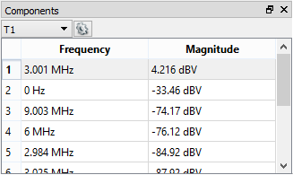
5.5. Cursors
See Cursors.
5.6. Markers
Markers are used to measure the amplitude, to indicate certain places on the sweep, such as band or channel limits. Using delta markers, you can make measurements that deal with power change with frequency or time.
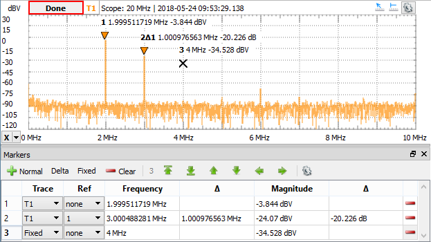
The menu of the markers view consists of:
- Normal: Adds a new marker.
- Delta: Adds a new delta marker. The reference for a delta marker can be selected in the Ref column.
- Fixed: Adds a new fixed marker. A normal marker can be made fixed by selecting Fixed option in Trace column.
- Clear: Removes all markers from this list. Markers can be also removed using the button in the last column.
Search button places the marker to:
- Peak: The maximum amplitude.
- Min: The minimum amplitude.
- Higher: The peak higher than the current amplitude position.
- Lower: The peak lower than the current amplitude position.
- Left: Next peak to the left of the current frequency position.
- Right: Next peak to the right of the current frequency position.
Settings:
- Search in visible range: When checked the previous search options operate in the visible frequency range.
- The following options are shared with Components options.
6. Export
See Export in Common Interfaces.